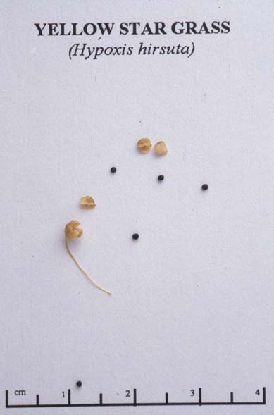
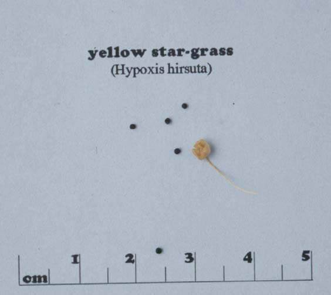

Hypoxis Hirsuta
Family: Amaryllidaceae
Yellow Star Grass
Swink/Wilhelm #9

Click to view larger photo
FLOWERING: Late April - Early June.
SEED TIMING: Mid - Late June.
HABITAT: Prairie.
DIAGNOSTIC FEATURES: 4 to 6 inches tall. Hairy, dark green, grass-like leaves. Six-petaled yellow star-like flower.
TO PICK: Fruit is a capsule, nearly round, up to 1/6-inch in diameter, with several black seeds.